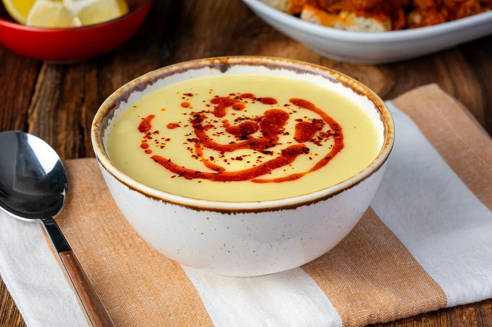

Mercimek Çorbası

Domatesli Pilav

Mor Lahana Salatası

Yeşil Mercimek Çorbası

Sulu Patates Yemeği

Arpa Şehriyeli Pirinç Pilavı

Adanalıyık: Tablacı Salatası

Çökertme Kebabı

Et Sote

Köfteli Patates Dizme

Fırında Soslu Tavuk Baget

Kupta Kadayıflı Muhallebi

Türlü

Fırında Tavuk Şiş

Akçaabat Köftesi

İrmikli Revani

Lebeniye Çorbası

Kazandibi